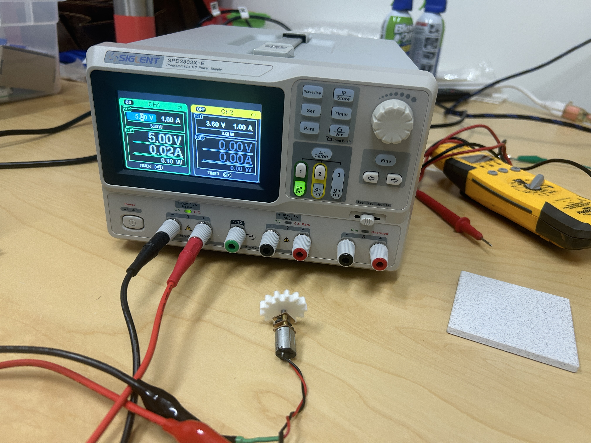
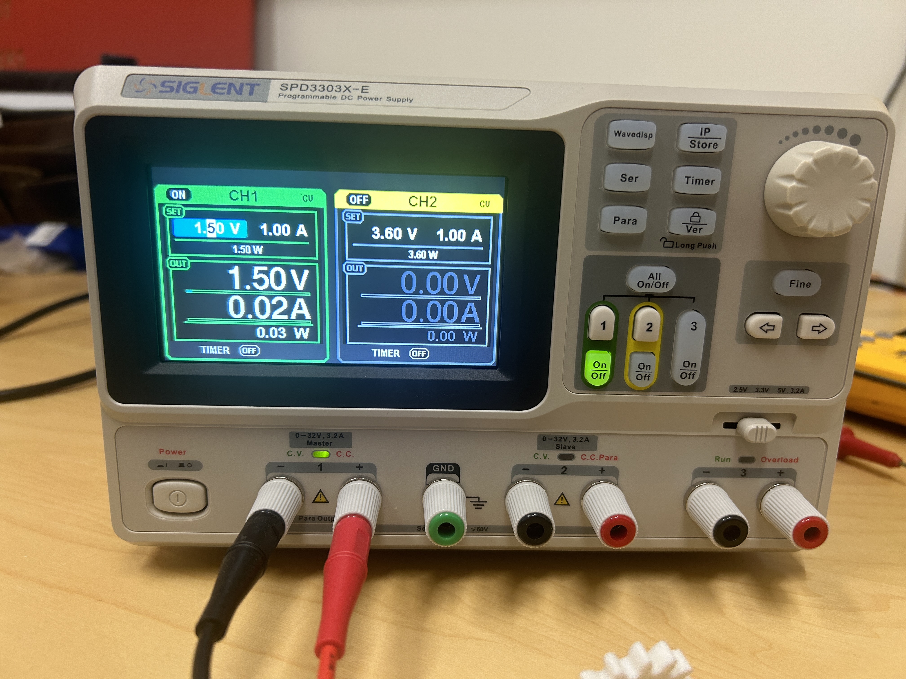
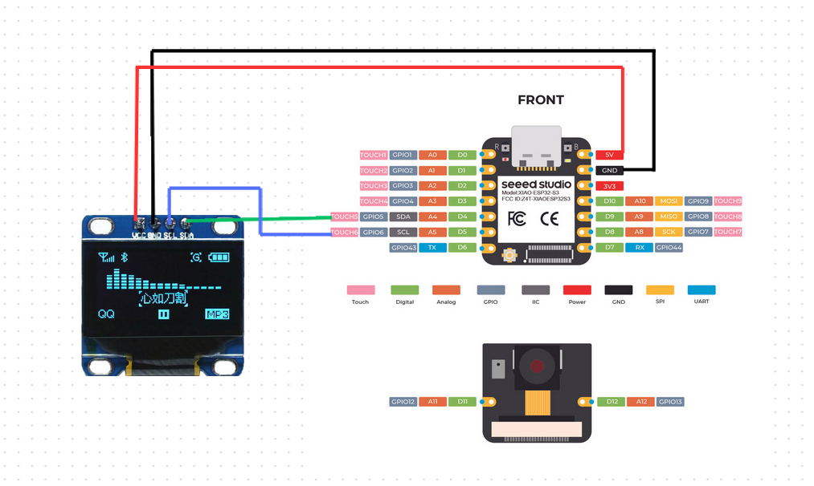
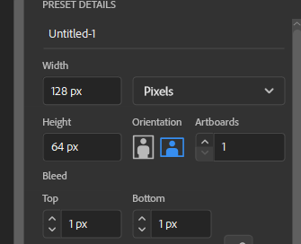
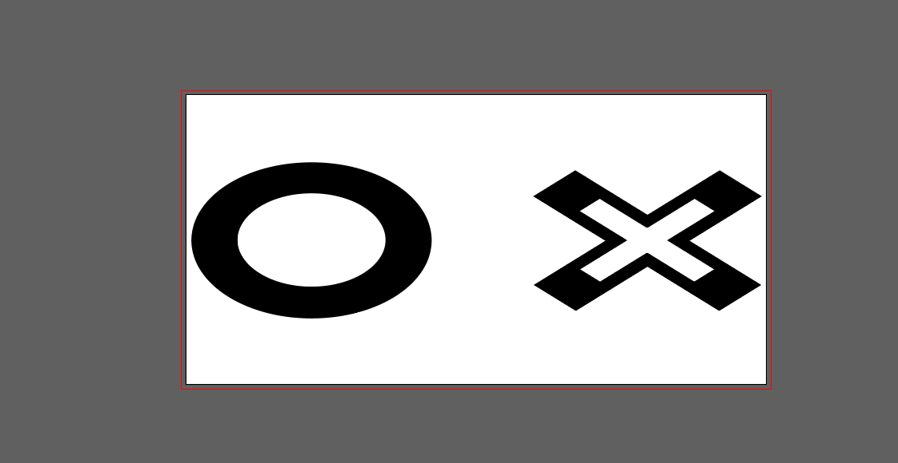
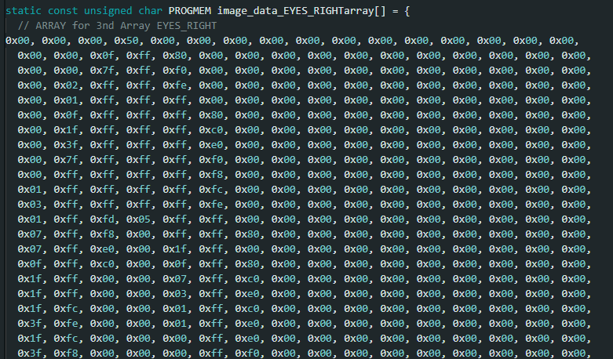
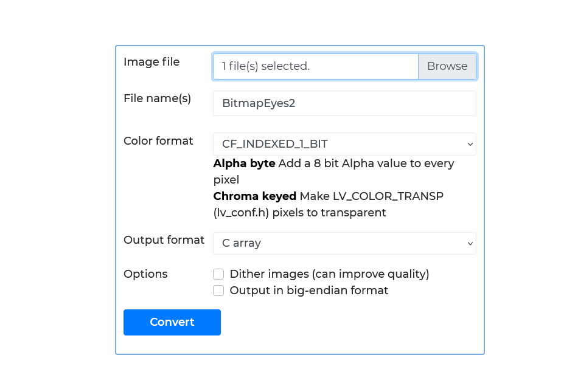
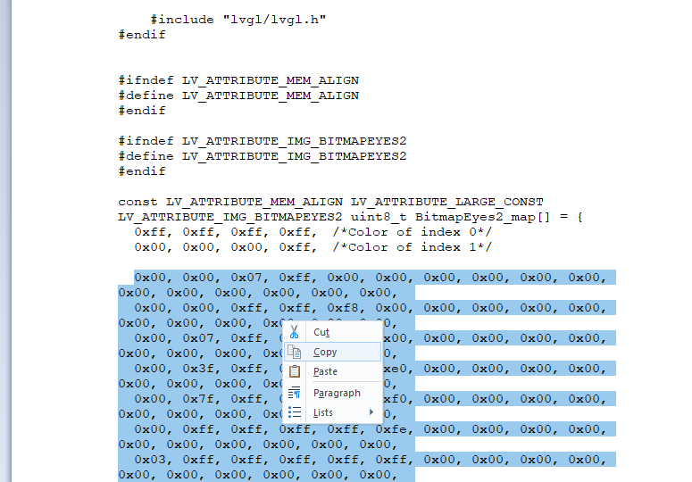
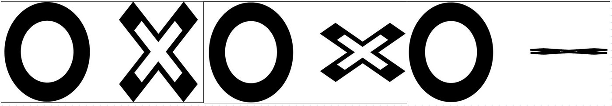

We were asked for this week to check the power draw of a component. In our lab we were really not using any large power draw components except for the motor in Peter's DAPR so we decided to use that as our test case.
To measure this normally you would put a multimeter in series with the component and a power source and use it to measure the current draw. The equation that governs Power is:
P=I*V
or
Power = Current * Voltage
In this power source you can set your voltage and then it will read the current draw of the connected component.
So using this we connected the motor and ran it through different voltages, starting at 5V. This would be it's max power draw from the microcontroller and dropping it down to 0V to see what it's draws could be, you can see them dropping in this video here:
So running at 5V or just above our motor draws a current of 0.03A. When you plug that into the equation it looks something like this:
P = 0.03A * 5.0V
Solving
P = 0.15W
Not a big power draw and the robot is running on a 5000mAh battery meaning we can run this motor for a very very long time.
This week, unfortunately I was still waiting for some parts to get home from DigiKey so I had to make due with what I had at home. And that was namely a 128x64 pixel screen that I have been planning on using for my robot's face.
If you have been looking at my final project and assignments you can see a specific design I have for the face of my robot. One circle eye, one "X" eye and a happy demeanor. I wanted that to be part of the style of this final project so I had to figure out one important thing.
How do I do that?
I bought these screens a while back because they were afforable and on Amazon for the low price of $7.99. Unfortunately I thought they would be a little bigger, but I like to make due with what I have. These also had a secondary advantage for this project, they only use 4 pins - 5V, GND, SCL and SDA.
This fact made it easier for me to connect it to my board and take advantage of the minimized footprint it had as compared to other screens I have found online with even more pins. So the first thing I did was connect it to my board. This time I started using the SEEED Studio Sense board that is based on an ESP32 instead of the RP2040 board that I have been using up to now. Because of this I have to change the pin outs that I am using to match where the I2C connectors are on my board.
I just got a few regular jumper cables, and got to work connecting that. With that the easy part was done. Now onto the hard part, the coding.
So, as any good maker does, I spend my time on youtube looking for other projects to work on and this idea was actually in the backburner for a while for me. So I decided to start on a video I had found a while ago.
To be able to get to the point of getting this to work you have to not only set up your board like we have in the past few weeks. You need to add a few libraries to your Arduino program. These libraries are the Adafruit GFX Library and the Adafruit SSD1306 Library.
Once those are installed you can go ahead and install the sketch on the website that is called OLED Moving Eyes 3 Arrays
Convenient link to the SketchIf you do it right and upload it to your board, you will get something that looks like this:
That is all fine and dandy, but I wanted to make something with MY face for my little guy so the tutorial actually goes into that too. And you have to start by making your own bitmaps for each frame in your animation.
In Illustrator the first thing you need to do is create an artboard that is the size of your screen, in this case 128x64 px. Make sure your units are in pixels or you will be creating an ENORMOUS image for your tiny screen and there will be issues there, some I actually ran into.
Then you have to create the image that you wanted, in my case I already had the eyes so I brought them over and since the screen only shows one color I made the images black. All the black parts of the bitmap will light up in the image.
I wanted my robot to wink, because why not have it flirty to start, so I made a scene where his X eye winks by compressing the size and making it bigger. Eventually I ended up with a series of images like this:
Pay close attention to the white area around this because it is going to cause problems later
Unfortunately, after making the images it is not as easy as just plopping them into the Arduino IDE. The code reads the images as a C array that looks something like this:
I could not and didn't want to cipher out how to do this by hand but luckily the tutorial provided me with a website to fix this problem: LVGL ONLINE CONVERTER
Here all you do is export your image as a bitmap and it will export the C array that you need. So I did just that using the following settings:
Be careful to use those precise settings if not your images will come out far too large or in colors that the screen cannot understand
Once this is processed the output will come out as a .c file and when opened in note pad or a similar editor it will show up as such:
Then you copy paste that into the code in each of the bitmap arrays and your output SHOULD work. I, however, had to make a few changes. But just for an update, this is what that looked like:
As you can see, the eyes were repeating too quickly and I did not know what to do. I tried to shift them around refresh the image differently, and do a few things until I had the idea of just making a bigger image that covered the whole size of the screen. This way, when the next image generated it would have to push the whole image out of the screen.
These made the eyes look much bigger but I did not mind what they ended up like. Before seeing the eyes in action, here is a sneak peek of the bitmaps:
